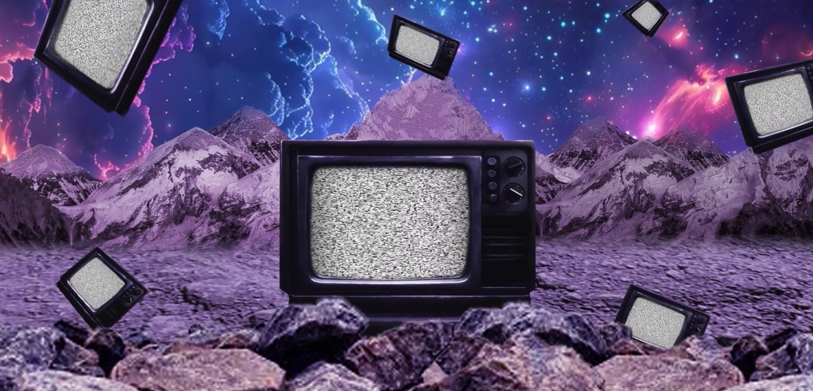
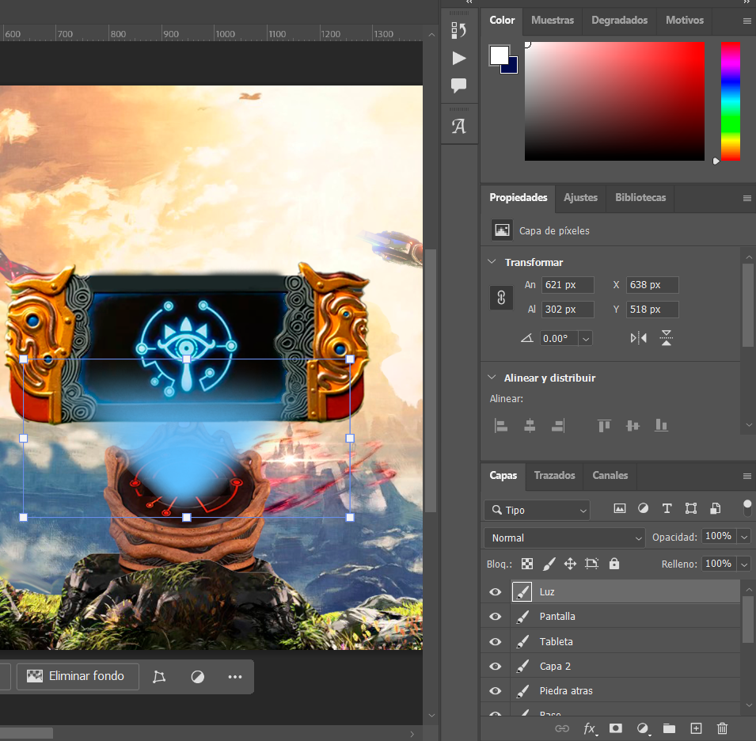
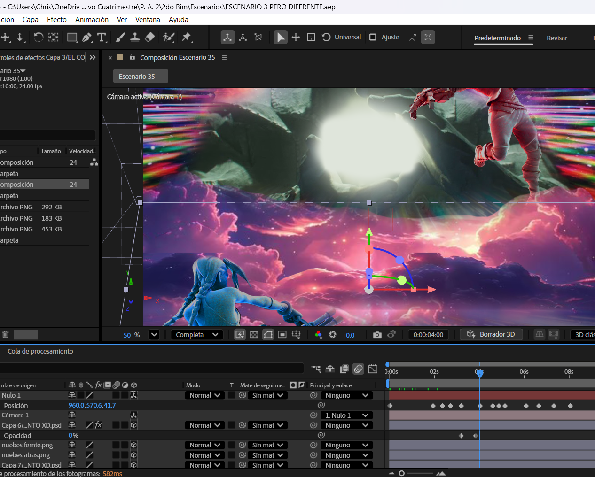
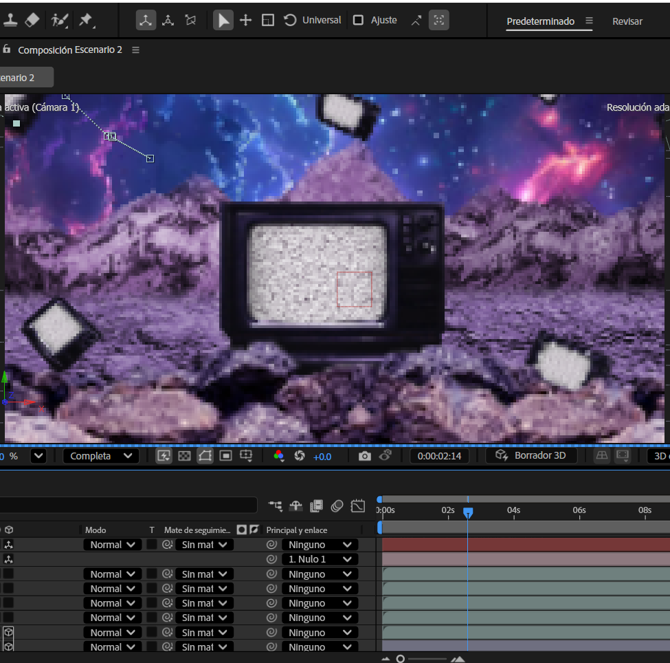
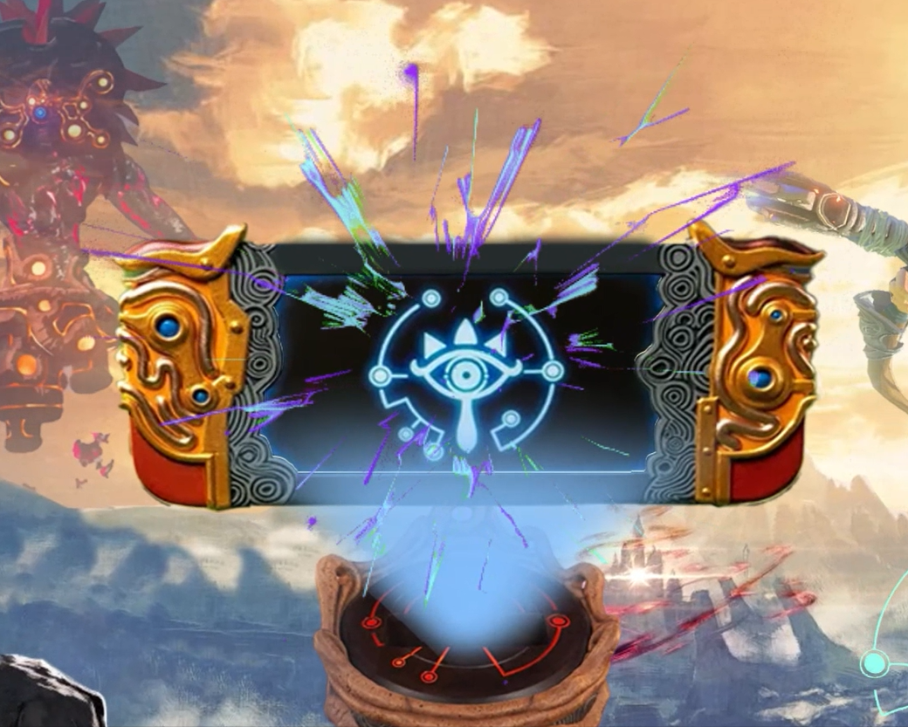
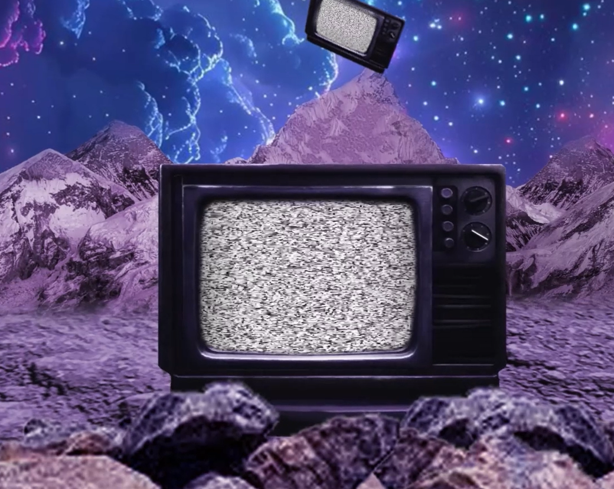
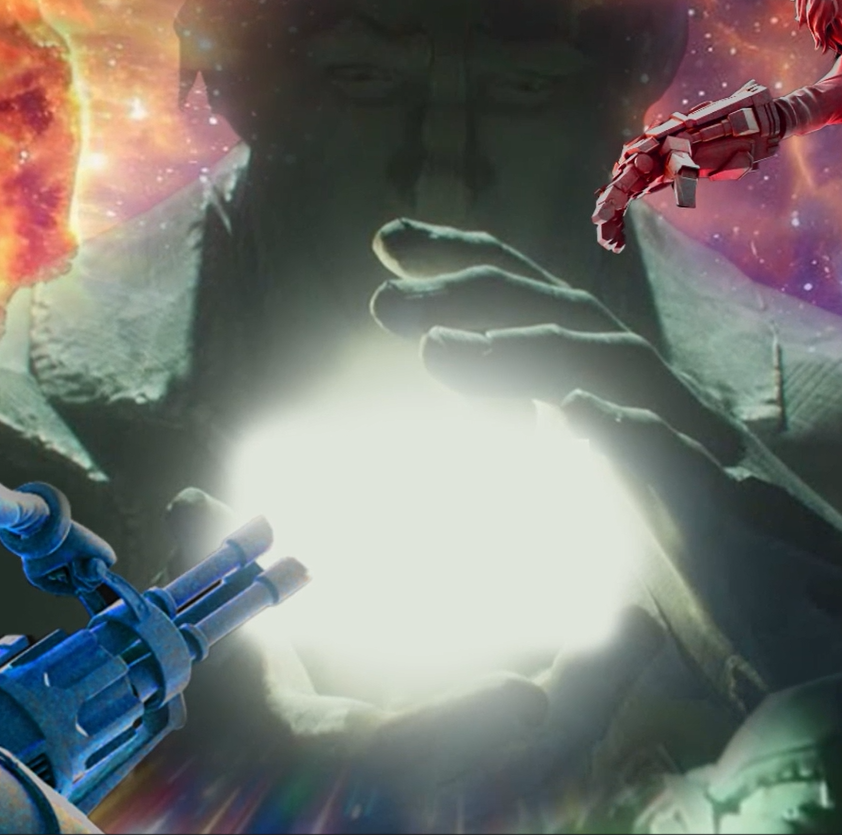

ANIMACIÓN
LOOP DE ESCENARIOS

OBJETIVO
Edición desde cero de un cortometraje bucle con 3 escenarios distintos, ilusción 3D creada con desplazamiento de cámara y distribución de objetos en distintas partes del entorno.
PROCESO
Se puede apreciar capturas donde se demuestra el tipo de movimiento de cámara (zoom) y demostracíon del bucle.



SOFTWARE
RESULTADO FINAL


